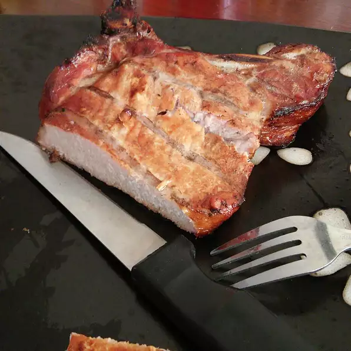

Pork Tenderloin in Bourbon

Tender pork marinated in soy sauce, bourbon and more.
May also be grilled.
Ingredients
- ¼ cup soy sauce
- ¼ cup bourbon
- 2 tablespoons brown sugar
- 2 cloves garlic, halved
- 3 pounds pork tenderloin/
-
Steps
- Mix together soy sauce, bourbon, brown sugar, and garlic. Pour over pork, cover, and refrigerate at least 2 hours, turning occasionally.
- Preheat oven to 325 degrees F (165 degrees C). Remove pork from marinade, and place on rack of shallow roasting pan.
- Bake for 45 minutes or until a meat thermometer registers 145 degrees F (63 degrees C).
Return to Home